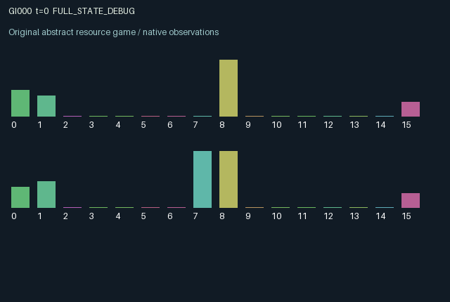

GI000 / LEGACY_ARRAY
Delayed energy transfers
2 agents5 actions16 observation columns32 original horizonRuntime: PASS
Release verification episode
Untrained uniform legal actions. Actual JAX state sampled along the full original episode; full-state debug camera. No human performance or learning claim.

Run this game
crucibles play --game 0
Start Python locally, then open the address printed by the terminal. Installation, multiplayer, takeover and keyboard controls →
Objective, rewards & ending
Exact task contract
{
"objective": "Accumulate original per-agent rewards under the interaction rules in mechanism.md.",
"natural_termination": "No early terminal; original t >= 32 horizon.",
"exact_transition_and_reward_source": "def raw_step(self, key, state, actions):\n # 0 idle, 1 charge, 2 transmit, 3 harvest, 4 intercept.\n available = jnp.minimum(1.0, state[\"energy\"] + jnp.roll(state[\"packet\"], 1))\n transmitted = jnp.where(actions == 2, jnp.minimum(available, 0.25), 0.0)\n remaining = available - transmitted\n stolen = jnp.where(\n actions == 4,\n jnp.minimum(jnp.roll(remaining, 1), 0.12),\n 0.0,\n )\n after_theft = remaining + stolen - jnp.roll(stolen, 1)\n harvested = jnp.where((actions == 3) & (after_theft >= 0.6), 0.6, 0.0)\n recharge = jnp.where(actions == 1, 0.16, 0.02)\n energy = jnp.clip(after_theft - harvested + recharge, 0.0, 1.0)\n rewards = jnp.clip(harvested - 0.04 * (actions == 4) - 0.02 * (actions == 1), -1.0, 1.0)\n next_state = {\n \"t\": state[\"t\"] + jnp.array(1, dtype=jnp.int32),\n \"energy\": energy.astype(jnp.float32),\n \"packet\": transmitted.astype(jnp.float32),\n \"last\": actions.astype(jnp.int32),\n \"yield\": harvested.astype(jnp.float32),\n }\n done_all = next_state[\"t\"] >= 32\n dones = jnp.full((2,), done_all, dtype=jnp.bool_)\n info = {\"done_all\": done_all, \"legal_mask\": self.legal_actions(next_state)}\n return self.observe(next_state), next_state, rewards.astype(jnp.float32), dones, info"
}Declared per-step reward bounds: -1.0 to 1.0. Observability: source_defined.
Rules
Original mechanism document (historical status wording retained)
# Delayed energy transfers Status: authored proposal, not executed or validated. Two agents own bounded energy stores. Charging increases one's store; transmitting removes a packet now and adds it to the other agent's store at the next transition. Harvesting pays only above a storage threshold and consumes the threshold amount. Interception transfers some of the other's currently available energy with a private cost. Simultaneous interceptions are calculated before either transfer, so neither agent has ordering priority. All persistent state is public and represented from each observer's own/other perspective. Last actions, recent harvest, pending packets, time, and role identity are observable. Each action is always legal; an unsuccessful harvest simply produces no harvest. Both agents directly change stored energy and can change the other's subsequent harvest opportunity. The delayed packet introduces a distinction between retaining resources, immediate appropriation, and voluntarily moving resources across the dyad. Harvest is bounded by 0.6 per step; charging costs 0.02 and interception costs 0.04, with rewards explicitly clipped to [-1,1]. Storage caps can waste resources and give situations in which transfers preserve otherwise wasted charging capacity. No claim is made that cooperation is optimal or learned. This is intentionally related to generic resource-transfer and threshold-harvesting games. Distinctness from other submissions, mechanism eligibility, compilation, and learning effectiveness are unassessed. Randomness only initializes energy from the supplied key. There is no auto-reset; terminal state is retained at t >= 32.
Commands
0Idle
1Charge
2Transmit energy
3Harvest
4Intercept partner energy
Roles & abilities
agent_0 Original legacy agent; see mechanism and source
agent_1 Original legacy agent; see mechanism and source
Observation permissions
Training receives only the original observation rows. Role cameras use declared visibility; debug cameras are explicitly marked. Local benchmark records log debug exposure and role takeover history.
Exact observation layout
[
{
"slice": [
0,
16
],
"visibility": "exact original observe() below",
"source_code": "def observe(self, state):\n energy = state[\"energy\"]\n packet = state[\"packet\"]\n obs = jnp.zeros((2, 16), dtype=jnp.float32)\n obs = obs.at[:, 0].set(energy)\n obs = obs.at[:, 1].set(jnp.roll(energy, 1))\n obs = obs.at[:, 2].set(packet)\n obs = obs.at[:, 3].set(jnp.roll(packet, 1))\n obs = obs.at[:, 4].set(state[\"t\"] / 32.0)\n obs = obs.at[:, 5].set(state[\"yield\"])\n obs = obs.at[:, 6].set(jnp.roll(state[\"yield\"], 1))\n obs = obs.at[:, 7].set(jnp.arange(2, dtype=jnp.float32))\n obs = obs.at[:, 8:13].set(jax.nn.one_hot(state[\"last\"], 5))\n obs = obs.at[:, 13].set(jnp.roll(state[\"last\"], 1) / 4.0)\n obs = obs.at[:, 14].set(energy >= 0.6)\n obs = obs.at[:, 15].set(jnp.minimum(energy, 0.25))\n return obs"
}
]Entity visibility & attributes
[]
Actual verification & provenance
Per-game execution receipt
{
"game": "gi000",
"status": "PASS",
"verification_revision": 2,
"source_sha256": "08d6707dc7ebac7b7017cec0e535cb1baf7b463c2ab3560c1199cce411603dc0",
"seed": 20261101,
"runtime": {
"jax": "0.4.38",
"numpy": "1.26.4",
"devices": [
"TFRT_CPU_0"
]
},
"dimensions": {
"num_agents": 2,
"observation_size": 16,
"num_actions": 5,
"max_steps": 32
},
"checks": {
"eager_reset": {
"status": "PASS",
"seconds": 0.5845539569854736
},
"observation_spaces_legal_masks": {
"status": "PASS",
"seconds": 0.13845443725585938
},
"eager_step": {
"status": "PASS",
"seconds": 0.32995033264160156
},
"jit_reset": {
"status": "PASS",
"seconds": 0.13564467430114746
},
"jit_step": {
"status": "PASS",
"seconds": 0.21125435829162598
},
"eager_jit_integer_parity_float_measurement": {
"status": "PASS",
"seconds": 0.0020058155059814453
},
"jit_vmap_reset": {
"status": "PASS",
"seconds": 0.2167212963104248
},
"jit_vmap_step": {
"status": "PASS",
"seconds": 0.2501094341278076
},
"outer_autoreset_api": {
"status": "PASS",
"seconds": 0.3842906951904297
},
"full_original_horizon_episode_and_render": {
"status": "PASS",
"seconds": 1.2064204216003418
}
},
"human_scores": null,
"browser_controls": "PENDING",
"failures": [],
"elapsed_seconds": 4.244264125823975,
"float_parity_max_abs": 0.0,
"numerical_parity": "EXACT",
"raw_terminal_absorbing": "NOT_PART_OF_ORIGINAL_LEGACY_CONTRACT",
"terminal_outer_reset": "PASS",
"episode_steps": 32,
"scripted_random_returns": [
0.3400000296533108,
0.7600000575184822
],
"terminal": true,
"demo_information": "FULL_STATE_DEBUG",
"demo_frames": 33,
"render_roles_checked": 2
}Chromium control verification
{
"game": "gi000",
"status": "PASS",
"human_scores": null,
"engineering": true,
"checks": [
"catalog_selected_and_real_native_reset",
"dom_queue_and_native_step",
"second_participant_ownership_and_native_joint_step",
"all_roles_individually_controllable_no_role_cap",
"explicit_debug_camera",
"release_to_pure_ai_without_reset",
"close_session_preserves_log"
],
"ui_sha256": "96243f9de144b80b5e20a114330e2206bdcd58d3efc9c6f13bbc08b95cacc14d",
"keyboard": "NO_LEGAL_CARDINAL_COMMAND_FOR_ROLE0_AT_RESET",
"seconds": 4.090759038925171
}Original identity and file hashes
{
"id": 0,
"key": "gi000",
"title": "Delayed energy transfers",
"summary": "",
"tags": [],
"family": "legacy_array",
"dimensions": {
"num_agents": 2,
"observation_size": 16,
"num_actions": 5,
"max_steps": 32
},
"source_sha256": "08d6707dc7ebac7b7017cec0e535cb1baf7b463c2ab3560c1199cce411603dc0",
"manifest_sha256": "691f28079a5af886be085271ceb54ae98546b0d542aeb5a79014f0319a3de0a4",
"files": [
{
"file": "candidate.py",
"sha256": "08d6707dc7ebac7b7017cec0e535cb1baf7b463c2ab3560c1199cce411603dc0",
"bytes": 2871,
"origin": "work/exp_2/astra_generation/discovery_v2/initial/candidate_00000/attempt_00/candidate.py"
},
{
"file": "mechanism.md",
"sha256": "1e3b576f8f5e03ea5cef17fbb8c0f34c2292b033ac965b15d614af747b56e926",
"bytes": 1669,
"origin": "work/exp_2/astra_generation/discovery_v2/initial/candidate_00000/attempt_00/mechanism.md"
}
],
"original_status": "LEGACY_SOURCE",
"original_saved_replay": false,
"release_validation": "PASS",
"human_scores": null,
"browser_validation": "PASS"
}